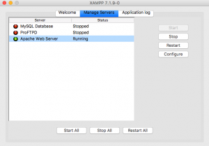

XAMPP startet nicht mehr, nachdem eine php-Extension hinzugefügt wurde
Ich hatte hier neulich das Problem, dass ich die mongodb Extension für PHP aktivieren wollte und sich danach der Apache-Dienst nicht mehr starten ließ. Aber der Reihe nach:
Das System ist OS 10.12.6 und ich nutze das XAMPP-Paket 7.1.9 mit entsprechend PHP 7.1. Außerdem habe ich mir homebrew installiert, da die Installation von pecl zu Umständlich (ich hätte alle möglichen Abhängigkeiten installieren müssen). Mit homebrew habe ich mir also den aktuellen mongodb-Treiber installiert, das geht recht einfach mit:
brew update brew install php71-mongodb
Danach lässt sich die Extension in der /Applications/XAMPP/xamppfiles/etc/php.ini Datei aktivieren:
extension="/usr/local/opt/php71-mongodb/mongodb.so"
Soweit. So einfach. Das Problem: Nachdem ich diese Zeile in der php.ini Datei hinzugefügt hatte, ließ sich der Apache-Dienst nicht mehr über die XAMPP-Oberfläche starten, obwohl diese mit root-Rechten ausgeführt wird. Leider gab auch die Log-Datei /Applications/XAMPP/xamppfiles/logs/error_log nicht viel her. Und auch nachdem ich die Zeile aus der php.ini-Datei entfernt habe, trat das Problem weiter auf. Ich bekam den Web-Server also nicht zum laufen und an keiner Stelle in den Log-Dateien war ersichtlich, was nicht stimmte.
[caption id=“attachment_1567” align=“aligncenter” width=“300”] 
{kind=link}
Recherche der aufgerufenen Kommandos
Also musste ich mich auf die Fehlersuche machen. Und das ist recht umständlich, denn der Klick auf den Button im XAMPP-UI stößt eine etwas längere Befehlskette an an deren Ende der Start des http-Daemons steht:
/Applications/XAMPP/xamppfiles/ctlscript.sh start apache
->
/Applications/XAMPP/xamppfiles/apache2/scripts/ctl.sh start
->
/Applications/XAMPP/xamppfiles/xampp startapache
->
/Applications/XAMPP/xamppfiles/bin/apachectl -k start -E /Applications/XAMPP/xamppfiles/logs/error_log -DSSL -DPHP
->
/Applications/XAMPP/xamppfiles/bin/httpd -k start -E /Applications/XAMPP/xamppfiles/logs/error_log -DSSL -DPHP
Ich hab mir also den letzten Aufruf geschnappt und auf der Konsole ausgeführt. Dort erhielt ich den ersten entscheidenen Hinweis - die log-Dateien waren nicht schreibbar:
(13)Permission denied: AH00086: httpd: could not open error log file /Applications/XAMPP/xamppfiles/logs/error_log. AH00548: NameVirtualHost has no effect and will be removed in the next release /Applications/XAMPP/xamppfiles/etc/extra/httpd-vhosts.conf:40 (13)Permission denied: AH00072: make_sock: could not bind to address [::]:80 (13)Permission denied: AH00072: make_sock: could not bind to address 0.0.0.0:80 no listening sockets available, shutting down
Das lässt sich schnell mit folgendem Aufruf beheben:
sudo chmod a+w /Applications/XAMPP/xamppfiles/logs/error_log
Damit war es natürlich noch nicht getan. Erst jetzt konnte ich dem error.log entnehmen, was das eigentliche Problem war:
AH00548: NameVirtualHost has no effect and will be removed in the next release /Applications/XAMPP/xamppfiles/etc/extra/httpd-vhosts.conf:40 (13)Permission denied: AH00072: make_sock: could not bind to address [::]:80 (13)Permission denied: AH00072: make_sock: could not bind to address 0.0.0.0:80 no listening sockets available, shutting down AH00015: Unable to open logs
Lösung - fehlende Rechte
Im Grunde war ja schon klar, was getan werden musste: Der Aufruf mit sudo. Damit lässt sich der Apache-Dienst also zumindest erstmal starten:
sudo /Applications/XAMPP/xamppfiles/bin/httpd -k start -E /Applications/XAMPP/xamppfiles/logs/error_log -DSSL -DPHP
Das eigentliche Problem bleibt freilich bestehen: Was hat das mit der php-Extension zu tun? Liegt es an dem mongodb-Treiber selber oder ist es ein generelles Problem? Bisher bin ich noch nicht dahinter gestiegen. Aber zumindest lässt sich der Web-Server erstmal wieder starten.